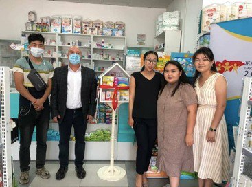
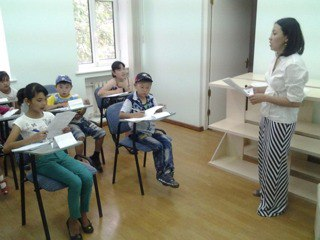
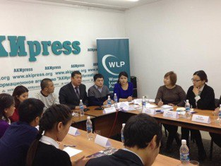

Жаштардын долбоору "Боорукердиктин аптечкасы"

"Мен жаш шайлоочумун" улуттук кампаниясы

Аз камсыз болгон балдар үчүн англис тили аркылуу насаатчылык
Өспүрүм кыздарды чечим кабыл алуу процесстерине тартуу, алардын укуктарын жана гендердик теңчиликти алга жылдыруу
Эл аралык кызматташтык ЖП КР
